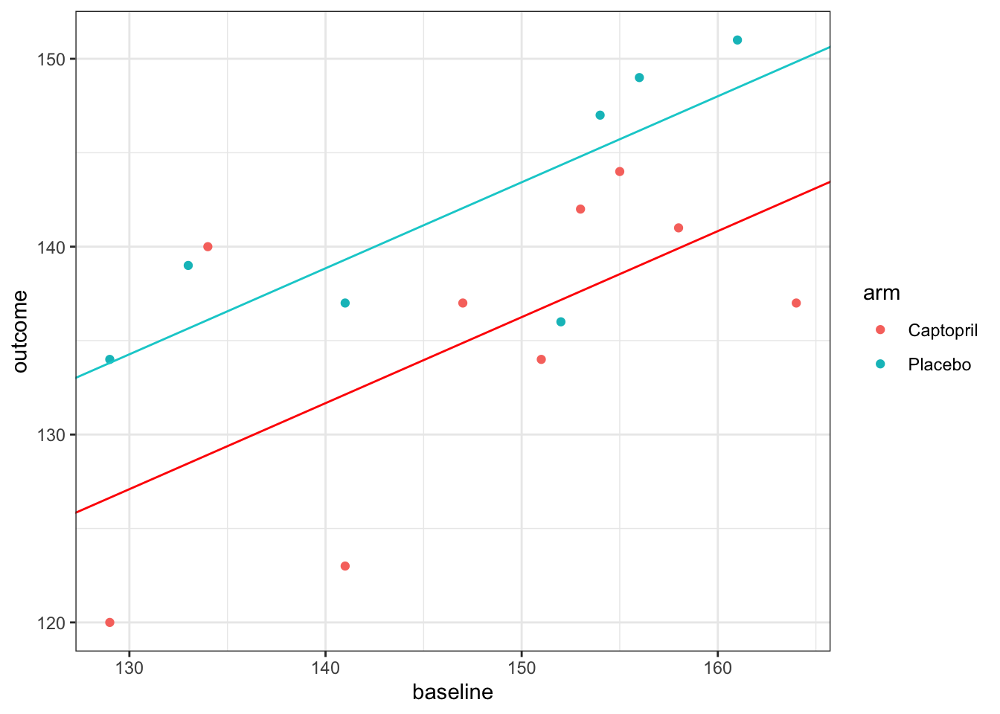
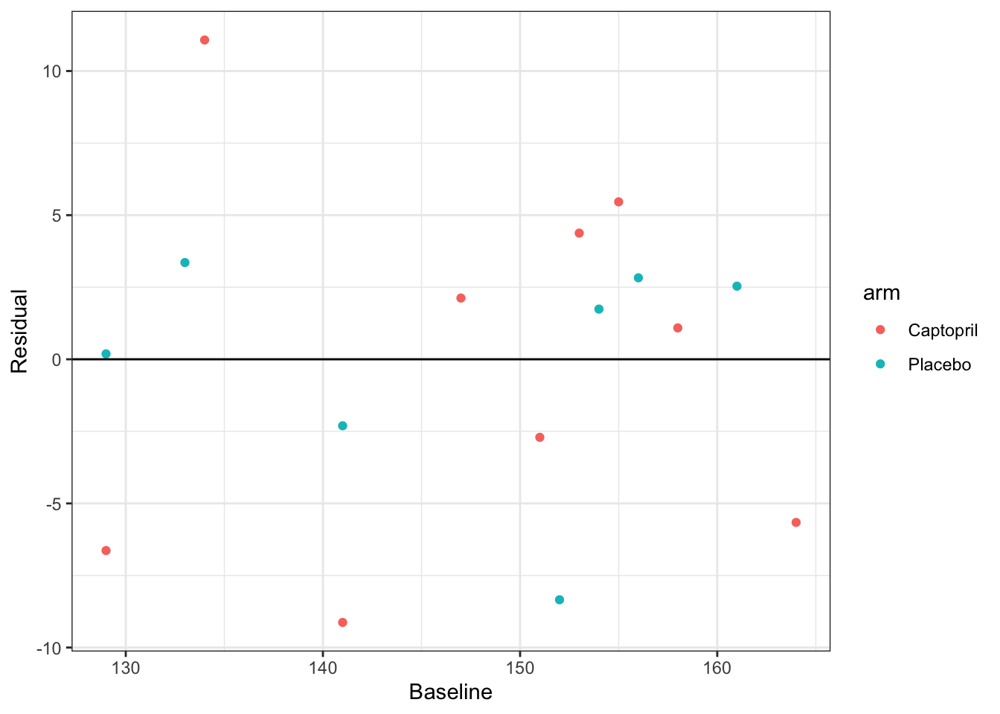
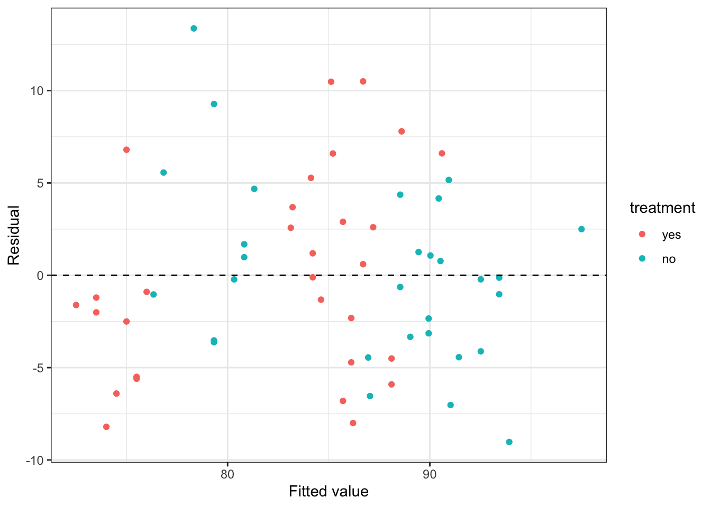

4 (Lecture 7) Analyzing RCT data
We’re now in the post-trial stage. The trial has been run, and we have lots of data to analyze to try to assess what effect the treatment or intervention has had. In general we will use the notation \(\tau\) to denote the treatment effect.
In this chapter we’ll keep our focus on the scenario where the trial outcome is measured on a continuous scale, but in later weeks we’ll go on to look at other types of data.
We now have trial data, and want to estimate the treatment effect \(\tau\).
Example 4.1
- From Hommel et al. (1986).
- 16 diabetes patients
- Group \(T\) receive Captopril, a drug that may reduce blood pressure.
- Placebo given to group \(C\)
- Primary outcome \(X\) is systolic blood pressure (mmHg)
This is important, since for those with diabetes, high blood pressure can exacerbate kidney disease (specifically diabetic nephropathy, a complication of diabetes). To participate in the trial, people had to be insulin-dependent and already affected by diabetic nephropathy. In the trial, systolic blood pressure was measured before participants were allocated to each trial arm, and then measured again after one week on treatment. A placebo was given to the control group, so that all participants were blinded.
The baseline and outcome blood pressure measurements (in mmHg) are shown in Table 4.1. We see that nine participants were assigned to the treatment arm (Captopril) and the remaining seven to the placebo group. Hommel et al. (1986) say that the patients were ‘randomly allocated’ to their group.
| Patient (ID) | Baseline (B) | Outcome at 1 week (X) | Trial Arm |
|---|---|---|---|
| 1 | 147 | 137 | Captopril |
| 2 | 129 | 120 | Captopril |
| 3 | 158 | 141 | Captopril |
| 4 | 164 | 137 | Captopril |
| 5 | 134 | 140 | Captopril |
| 6 | 155 | 144 | Captopril |
| 7 | 151 | 134 | Captopril |
| 8 | 141 | 123 | Captopril |
| 9 | 153 | 142 | Captopril |
| 1 | 133 | 139 | Placebo |
| 2 | 129 | 134 | Placebo |
| 3 | 152 | 136 | Placebo |
| 4 | 161 | 151 | Placebo |
| 5 | 154 | 147 | Placebo |
| 6 | 141 | 137 | Placebo |
| 7 | 156 | 149 | Placebo |
This is very small dataset, and so in that respect it is quite unusual, but its structure is similar to many other trials.
We will build up from the simplest type of analysis to some more complicated / sophisticated approaches.
4.1 Confidence intervals and P-values
Because the randomization process should produce groups that are comparable, we can in principle compare \(X\) between the groups.
Example 4.2 Summary statistics of the outcome for each group are shown below.
| Sample Size | Mean (mmHg) | SD (mmHg) | SE of mean (mmHg) | |
|---|---|---|---|---|
| Captopril | 9 | 135.33 | 8.43 | 2.81 |
| Placebo | 7 | 141.86 | 6.94 | 2.62 |
We have
\[ \begin{aligned} \bar{x}_T & = 135.33 \\ \bar{x}_C & = 141.86. \end{aligned} \]
Difference in average of \(X\) between the two groups \(141.86 - 135.33 = 6.53 \text{mmHg}\).
Clearly overall there has been some reduction in systolic blood pressure for those in the Captopril arm, but how statistically sound is this as evidence? It could be that really (for the hypothetical population) there is no reduction, and we have just been ‘lucky’.
The variances within the two groups are fairly close, so we can use the pooled estimate of standard deviation:
\[ s_p = \sqrt{\frac{\sum\limits_{i=1}^N\left(n_i-1\right)s_i^2}{\sum\limits_{i-1}^N\left(n_i-1\right)}}. \]
In our case
\[ \begin{aligned} s_p&= \sqrt{\frac{8\times{8.43^2} + 6 \times{6.94^2}}{8+6}}\\ & = 7.82\text{ mmHg.} \end{aligned} \]
We can do an independent two-sample \(t\)-test,
\[ \begin{aligned} t & = \frac{\bar{X_C} - \bar{X_T}}{s_p\sqrt{\frac{1}{n_C} + \frac{1}{n_T}}}\\ & = \frac{6.53}{7.82\sqrt{\frac{1}{7} + \frac{1}{9}}} \\ & = 1.65. \end{aligned} \] Note that here the placebo group is group \(C\), and the Captopril group is group \(T\).
Under \(H_0\), this value should be \(t_{14}\) (\(n_i-1\) for each group).
Figure 4.1: The distribution \(t_{14}\), with \(t=1.65\) shown by the dashed line and the ‘more extreme’ areas shaded.
The dashed line is at \(t=1.65\), and the red shaded areas show anywhere ‘at least as extreme’. We can find the area (ie. the probability of anything at least as extreme as our found value) in R by
## [1] 0.1211902So \(p=0.121\) - not significant even at \(\alpha=0.1\).
4.1.1 What do we do with this outcome?
Worst case scenario:
- \(\hat{\tau} = 6.53\text{ mmHg}\) is large enough to be compelling
- Dataset is too small for it to be statistically significant
- Can’t confidently conclude that Captopril has any effect on blood pressure (reject \(H_0\)).
- Can’t say that there is no effect.
This is exactly the sort of scenario we hoped to avoid when planning our study.
Consider the range of treatment effects that are compatible with our trial data. That is, we find the set
\[\left\lbrace \tau \mid \frac{\lvert \bar{x}_C - \bar{x}_T - \tau \rvert}{s\sqrt{n_C^{-1} + n_T^{-1}}} \leq t_{n_C+n_T-2;\,0.975} \right\rbrace. \] Suppose the true treatment effect is \(\tau^*\), and we test \(H_0:\; \tau = \tau^*\).
- For all \(\tau^*\) inside this range, our data are not sufficiently unlikely to reject the \(H_0\) at the 0.05 level.
- For all values of \(\tau^*\) outside this range, our data are sufficiently unlikely to reject that hypothesis.
Rearrange to give a 95% confidence interval for \(\tau\),
\[\left\lbrace \tau \mid \bar{x}_C - \bar{x}_T - t_{n_C+n_T-2;\,0.975}\,s\sqrt{n_C^{-1} + n_T^{-1}} \leq \tau \leq \bar{x}_C - \bar{x}_T + t_{n_C+n_T-2;\,0.975}\,s\sqrt{n_C^{-1} + n_T^{-1}} \right\rbrace \]
Example 4.3 Continuing our example, we have
\[\left\lbrace \tau \mid \frac{\lvert 6.53 - \tau \rvert}{7.82\sqrt{\frac{1}{7} + \frac{1}{9}}} \leq t_{14;0.975} = 2.145 \right\rbrace \]
Here, \(t_{14;0.975} = 2.145\) is the \(t\)-value for a significance level of \(0.05\), so if we were working to a different significance level we would change this.
Rearranging as above, this works out to be the interval
\[ -1.92 \leq \tau \leq 14.98. \]
Notice that zero is in this interval, consistent with the fact that we failed to reject the null hypothesis.
Some things to note
- We can compute this confidence interval whether or not we failed to reject the null hypothesis that \(\tau=0\), and for significance levels other than 0.05.
- Reporting the CI is much more informative than simply reporting the \(P\)-value. In our Captopril example, we found that a negative treatment effect (ie. Captopril reducing blood pressure less than the placebo) of more than 2 mmHg was very unlikely, whereas a positive effective (Captopril reducing blood pressure) of up to 15 mmHg was plausible. If Captopril were inexpensive and had very limited side effects (sadly neither of which is true) it may still be an attractive drug.
- These confidence intervals are exactly the same as you have learned before, but we emphasise them because they are very informative in randomised controlled trials (but not so often used!).
At the post trial stage, when we have data, the confidence interval is the most useful link to the concept of power, which we thought about at the planning stage.
Remember that the power function is defined as
\[\psi \left(\tau\right) = P\left(\text{Reject }H_0\mid \tau\neq 0\right),\]
This was calculated in terms of the theoretical model of the trial, and in terms of some minimum detectable effect size \(\tau_M\) that we wanted to be able to correctly detect with probability \(1-\beta\) (the power). Sometimes people attempt to re-calculate the power after the trial, to detect whether the trial was underpowered. However, now we have actual data.
You can’t calculate the power of a trial after it’s happened, but if we fail to reject \(H_0\) and \(\tau_M\) is in the confidence interval for \(\tau\), then that is a good indication that our trial was indeed underpowered.
4.2 (Lecture 8) Using baseline values
In our example above, our primary outcome variable \(X\) was the systolic blood pressure of each participant at the end of the intervention period.
In Table 4.1 we also have baseline measurements: measurements of systolic blood pressure for each patient from before the intervention period. We’ll denote these \(B_T\) and \(B_C\).
Baseline measurements are useful primarily for two reasons:
- They can be used to assess the balance of the design.
- They can be used in the analysis.
We will demonstrate these by returning to our Captopril example.
Example 4.4 Balance:
- Placebo group: \(\bar{b}_C = 146.6 \text{ mmHg}\) and \(SD\left(b_C\right) = 12.3 \text{ mmHg}\)
- Captopril group: \(\bar{b}_T = 148 \text{ mmHg}\) and \(SD\left(b_T\right) = 11.4 \text{ mmHg}\)
Not identical, but sufficiently similar not to suspect systematic imbalance. In a study this small there is likely to be some difference.
Note, it’s sensible to compare things informally like this, but sometimes people suggest using a t-test or similar to test whether the two groups are similar enough. This is a flawed exercise: a formal hypothesis test is testing whether what we see is likely to have arisen by random change. We know that this arose by random chance, because we randomly allocated the patients! A formal test only makes sense if you suspect that something has systematically disrupted the randomisation.
Analysis:
- Interested in whether Captopril has reduced BP for each individual - makes sense to compare change in BP (\(X-B\)), rather than final BP measurement.
We can see individual data in Table 4.3 and summary statistics in Table 4.4.
| Patient (ID) | Baseline (B) | Outcome at 1 week (X) | Trial Arm | Difference |
|---|---|---|---|---|
| 1 | 147 | 137 | Captopril | -10 |
| 2 | 129 | 120 | Captopril | -9 |
| 3 | 158 | 141 | Captopril | -17 |
| 4 | 164 | 137 | Captopril | -27 |
| 5 | 134 | 140 | Captopril | 6 |
| 6 | 155 | 144 | Captopril | -11 |
| 7 | 151 | 134 | Captopril | -17 |
| 8 | 141 | 123 | Captopril | -18 |
| 9 | 153 | 142 | Captopril | -11 |
| 1 | 133 | 139 | Placebo | 6 |
| 2 | 129 | 134 | Placebo | 5 |
| 3 | 152 | 136 | Placebo | -16 |
| 4 | 161 | 151 | Placebo | -10 |
| 5 | 154 | 147 | Placebo | -7 |
| 6 | 141 | 137 | Placebo | -4 |
| 7 | 156 | 149 | Placebo | -7 |
| Sample Size | Mean (mmHg) | SD (mmHg) | SE of mean (mmHg) | |
|---|---|---|---|---|
| Captopril | 9 | -12.67 | 8.99 | 3.00 |
| Placebo | 7 | -4.71 | 7.91 | 2.99 |
Now we can perform our test as before,
\[ t = \frac{- 12.67 - (-4.71)}{8.54\sqrt{\frac{1}{7}+\frac{1}{9}}} = -1.850 \] where 8.54 is the pooled standard deviation (as before). Under the null distribution of no difference, this has a \(t\)-distribution with 14 degrees of freedom, and so we have a \(P\)-value of 0.086. Our 0.95 confidence interval is
\[ -12.67 - (-4.71) \pm t_{14;\,0.975}\times 8.54\sqrt{\frac{1}{7}+\frac{1}{9}} = \left[-17.2,\;1.3\right].\] Taking into account the baseline values in this way has
- slightly reduced the \(P\)-value (though still \(p>0.05\))
- shifted the confidence interval slightly lower
4.2.1 Why did the CI and p-value change?
Notation:
- Baseline: \(B_C,\,B_T\)
- Outcome : \(X_C,\,X_T\)
All participants have been randomised from the same population, so
\[\operatorname{E}\left(B_C\right) = \operatorname{E}\left(B_T\right) = \mu_B.\] Assuming some treatment effect \(\tau\) (which could still be zero) we have
\[ \begin{aligned} \operatorname{E}\left(X_C\right) & = \mu\\ \operatorname{E}\left(X_T\right) & = \mu + \tau. \end{aligned} \] Sometimes we’ll have \(\mu_B=\mu\), but this won’t always be the case.
Usually we will assume that
\[\operatorname{Var}\left(X_C\right) = \operatorname{Var}\left(X_T\right) = \operatorname{Var}\left(B_C\right) = \operatorname{Var}\left(B_T\right) = \sigma^2,\] and this is generally fairly reasonable in practice.
For our two analyses so far we have
\[ \begin{aligned} \operatorname{E}\left(X_T\right) - \operatorname{E}\left(X_C\right) & = \left(\mu + \tau\right) - \mu = \tau\\ \operatorname{E}\left(X_T - B_T\right) - \operatorname{E}\left(X_C - B_C\right) & = \left(\mu - \mu_B + \tau\right) - \left(\mu - \mu_B\right) = \tau, \end{aligned} \] that is, both are unbiased estimators of \(\tau\).
However, whereas the first is based on data with variance \(\sigma^2\), the second has
\[ \begin{aligned} \operatorname{Var}\left(X_T-B_T\right) & = \operatorname{Var}\left(X_T\right) + \operatorname{Var}\left(B_T\right) - 2\operatorname{cov}\left(X_T,B_T\right)\\ & = \sigma^2 + \sigma^2 - 2\rho\sigma^2 \\ & = 2\sigma^2\left(1-\rho\right), \end{aligned} \] where \(\rho\) is the true correlation between \(X\) and \(B\), and is assumed to be the same in either group.
Similarly,
\[\operatorname{var}\left(X_C-B_C\right) = 2\sigma^2\left(1-\rho\right).\]
Using this to work out the variance of the estimator \(\hat{\tau}\) we find that for comparing means we have
\[\operatorname{var}\left(\tau\right) = \operatorname{var}\left(\bar{x}_T - \bar{x}_C\right) = \sigma^2\left(\frac{1}{m}+\frac{1}{n}\right).\]
whereas for comparing differences from baseline
\[\operatorname{var}\left(\tau\right) = \operatorname{var}\left[\left(\overline{X_T-B_T}\right) - \left(\overline{X_C - B_C}\right)\right] = 2\sigma^2\left(1-\rho\right)\left(\frac{1}{m}+\frac{1}{n}\right).\]
Therefore,
- If \(\frac{1}{2}<\rho\leq 1\) there will be a smaller variance when comparing differences
- If \(0\leq\rho<\frac{1}{2}\)there will be a smaller variance when comparing outcome variables
Intuitively, this seems reasonable: if the correlation between baseline and outcome measurements is very strong, then we can remove some of the variability between participants by taking into account their baseline measurement. However, if the correlation is weak, then by including the baseline in the analysis we are essentially just introducing noise.
For our Captopril example, the sample correlation between baseline and outcome is 0.63 in the Captopril group and 0.80 in the Placebo group. This fits with the \(P\)-value having reduced slightly.
4.2.2 A dodgy way to use baseline variables (skip this in lectures!)
Sometimes the analysis performed on a dataset is rather spurious, but it isn’t always immediately obvious why. We’ll look at one example now, because it is done sometimes.
Look at each group separately and determine whether there has been a significant change in the outcome variable (assumes \(\mu_B = \mu\)).
For Captopril data, we could perform a paired \(t\)-test on the difference between baseline \(B\) and outcome \(X\) for each patient, for each group.
If we do this, we find the summary statistics in Table 4.5.
| t_stat | df | p_value | |
|---|---|---|---|
| Captopril | 4.23 | 8 | 0.003 |
| Placebo | 1.58 | 6 | 0.170 |
We find
- Strong evidence for a change in blood pressure for the Captopril patients (group \(T\))
- No such evidence for the placebo patients.
Can we therefore conclude that Captopril is significantly better than the placebo? No! The analysis is flawed:
- The \(p\)-value of 0.17 in the control group doesn’t show that \(H_0\) is true (no treatment effect for the control group) is true, just that we can’t reject the null hypothesis. It is quite possible that there is a difference in the control group, and that numerically it could even be comparable to that in the treatment group, so although we can say that there is a significant reduction in blood pressure for the captopril group, we can’t conclude that Captopril is better than the placebo.
- Having set up the experiment as a randomised controlled trial, with a view to comparing the two groups, it seems strange to then deal with them separately.
4.3 Analysis of covariance (ANCOVA)
Previously: based our analysis on the baseline values being statistically identical draws from the underlying distribution, and therefore having the same expectation and variance.
However, in the event there will be some imbalance.
We can see this in our Captopril example. Eg. we saw that difference in baseline means is \(\bar{b}_C - \bar{b}_T = 1.4 \text{ mmHg}\).
- Not clinicaly significant
- Not large enough to make us doubt our randomisation
- A difference nonetheless
Figure 4.2: Baseline measurements from the Captopril trial.
Basic principle of ANCOVA: if there is some correlation between baseline and outcome, then baselines differing leads to outcomes differing, even if there is no treatment effect (ie. if \(\tau=0\)).
Indeed, how do we decide how much of the difference in outcome is down to the treatment itself, and how much is simply the difference arising from different samples?
This issue arises in many trials, particularly where there is a strong correlation between baseline and outcome measurements.
4.3.1 The theory
Usual notation and assumptions:
- Outcome \(X\), baseline \(B\)
- \(E\left(X_T\right) = \mu + \tau\)
- \(E\left(X_C\right) = \mu\)
- \(var\left(X_T\right) = var(X_C) = \sigma^2\)
- Correlation between \(B\) and \(X\) is \(\rho\) within each group
- We want to learn about \(\tau\)
Baseline \(B\) (same measurement as \(X\)) is measured before start of trial. Assume \(E(B_T) = E(B_C) = \mu_B\) and \(var(B_C) = var(B_T) = \sigma^2\). Also assume both groups have size \(N\), therefore \(2N\) patients in all.
We observe baseline measurements \(b_1,\,b_2,\ldots,b_{2N}\).
4.3.1.1 Constructing an estimator
Let’s suppose that random variables \(Z\) and \(Y\) are jointly normally distributed with correlation \(\rho\)
\[\begin{equation} \begin{pmatrix} Z\\ Y \end{pmatrix} \sim N\left( \begin{pmatrix} \mu_Z\\ \mu_Y \end{pmatrix},\; \begin{pmatrix} \sigma^2_Z & \rho\sigma_Z\sigma_Y \\ \rho\sigma_Z\sigma_Y & \sigma^2_Y \end{pmatrix} \right). \tag{4.1} \end{equation}\]
From Equation (4.1), we know that \(\operatorname{E}\left(Y\right) = \mu_Y\).
But, if we have observed \(Z=z\), this gives us some information about likely values of \(Y\): if \(\rho>0\) then a lower value of \(z\) should lead us to expect a lower value of \(Y\), for example. Figure 4.3 shows
\[\begin{equation} \begin{pmatrix} Z\\ Y \end{pmatrix} \sim N\left( \begin{pmatrix} 0\\ 0 \end{pmatrix},\; \begin{pmatrix} 2 & 1.5 \\ 1.5 & 3 \end{pmatrix} \right). \tag{4.2} \end{equation}\]
Figure 4.3: A bivariate normal density.
The higher the value of \(\rho\) (in magnitude), the more the conditional distribution of \(Y\) given an observed value of \(z\) deviates from the marginal distribution of \(Y\) (in our example, \(N\left(0,\;3\right)\)). In particular, \[\operatorname{E}\left(Y\mid{Z=z}\right)\neq{\operatorname{E}\left(Y\right)}.\]
If we have another random variable, \(W\), that is independent of \(Y\) (and note that if two normally distributed variables are uncorrelated, they are also independent), then observing \(W=w\) doesn’t give us any information about the distribution of \(Y\), so we have
\[ \operatorname{E}\left(Y\mid{W=w}\right)={\operatorname{E}\left(Y\right)}. \] We can combine this information to work out \(\operatorname{E}\left(Y\mid{Z=z}\right)\). Firstly, we’ll calculate the covariance of \(Z\) and \(Y-kZ\), for some constant \(k\). We can find this by
\[ \begin{aligned} \operatorname{cov}\left(Z,\,Y-kZ\right) &= \operatorname{E}\big[\left(Z-\mu_Z\right)\left(Y-kZ - \mu_Y + k\mu_Z\right)\big]\\ &\text{ (using that }\operatorname{cov\left(Z,Y\right)=\operatorname{E}\left[\left(Z-\operatorname{E}\left(Z\right)\right)\left(Y-\operatorname{E}\left(Y\right)\right)\right]}\\ & = \operatorname{E}\left[\left(Z-\mu_Z\right)\left(Y-\mu_Y\right) - k\left(Z-\mu_Z\right)^2\right]\\ & = \rho \sigma_Z\sigma_Y - k\sigma_Z^2. \end{aligned} \] If we set
\[k = \beta = \frac{\rho\sigma_Y}{\sigma_Z} \] then \(\operatorname{cov}\left(Z,\,Y-\beta Z\right)=0\), and since \(Y-\beta Z\) is also normally distributed, this means that \(Z\) and \(Y-\beta Z\) are independent. Therefore we have
\[\operatorname{E}\left(Y-\beta Z \mid Z=z\right) = \operatorname{E}\left(Y-\beta Z\right) = \mu_Y - \beta \mu_Z.\]
However, since we’re conditioning on an observed value of \(Z=z\) we can take \(Z\) to be fixed at this value, and so \(\operatorname{E}\left(\beta Z\mid{Z=z}\right) = \beta z\). Finally, this allows us to calculate
\[ \begin{aligned} \operatorname{E}\left(Y\mid{Z=z}\right) & = \operatorname{E}\left(\beta Z\mid{Z=z}\right) + \mu_Y - \beta\mu_Z\\ & = \mu_Y + \beta\left(z - \mu_Z\right). \end{aligned} \]
Applying this to our clinical trials setup:
\[ \begin{aligned} \operatorname{E}\left(X_i\mid{b_i}\right) &= \mu + \rho\left(b_i - \mu_B\right)\text{ in the control group}\\ \operatorname{E}\left(X_i\mid{b_i}\right) &= \mu +\tau + \rho\left(b_i - \mu_B\right)\text{ in the test group.} \end{aligned} \]
From this, we find that
\[\begin{equation} \operatorname{E}\left(\bar{X}_T - \bar{X}_C\mid{\bar{b}_T,\,\bar{b}_C}\right) = \tau + \rho\left(\bar{b}_T - \bar{b}_C\right). \tag{4.3} \end{equation}\]
If there is a difference in the baseline mean between groups, then the difference in outcome means is not an unbiased estimator of the treatment effect \(\tau\).
Assuming \(\rho>0\) (which is almost always the case) then
- if \(\bar{b}_T>\bar{b}_C\) the difference in outcome means overestimates \(\tau\)
- if \(\bar{b}_T<\bar{b}_C\), the difference in outcome means underestimates \(\tau\).
The only situation in which the difference in outcome means is an unbiased estimator is when \(\rho=0\), however this is not common in practice.
Comparing the difference between outcome and baseline, as we did in 4.2, does not solve this problem, since we have
\[\operatorname{E}\left[\left(\bar{X}_T - \bar{b}_T\right) - \left(\bar{X}_C - \bar{b}_C\right)\mid{\bar{b}_T,\,\bar{b}_C}\right] = \tau + \left(\rho-1\right)\left(\bar{b}_T - \bar{b}_C\right),\] which is similarly biased (unless \(\rho=1\), which is never the case).
Notice, however, that if we use as our estimator
\[\begin{equation} \hat{\tau} = \left(\bar{X}_T - \bar{X}_C\right) - \rho \left(\bar{b}_T - \bar{b}_C\right) \tag{4.4} \end{equation}\]
then, following from Equation (4.3) we have
\[\operatorname{E}\left[\left(\bar{X}_T - \bar{X}_C\right) - \rho \left(\bar{b}_T - \bar{b}_C\right)\mid{\bar{b}_T,\,\bar{b}_C}\right] = \tau + \rho\left(\bar{b}_T - \bar{b}_C\right)- \rho\left(\bar{b}_T - \bar{b}_C\right) = \tau. \]
4.3.1.2 What’s the variance of this estimator?
To work out the variance of \(\hat{\tau}\) in Equation (4.4) we need to go back to our bivariate normal variables.
Recall that \(\operatorname{var}\left(Y\right) = \operatorname{E}\left[Y^2\right] - \left[\operatorname{E}\left(Y\right)\right]^2\), and so
\[\begin{equation} \operatorname{var}\left(Y\mid{Z=z}\right) = \operatorname{E}\left(Y^2\mid{Z=z}\right) - \left[\operatorname{E}\left(Y\mid{Z=z}\right)\right]^2. \tag{4.5} \end{equation}\]
We already know the second term, and we can find the first term using the same idea as before, this time noting that \(Z\) and \(\left(Y-\beta Z\right)^2\) are independent.
From this, and using the fact that (for example)
\[ \begin{aligned} \operatorname{var}\left(Z\right) & = \operatorname{E}\left(Z^2\right) - \left[\operatorname{E}\left(Z\right)\right]^2\\ \text{and therefore} & \\ \operatorname{E}\left(Z^2\right) &= \sigma_Z^2 + \mu_Z^2, \end{aligned} \]
we find that
\[\begin{equation} \operatorname{E}\left[\left(Y-\beta Z\right)^2 \mid Z=z\right] = \operatorname{E}\left[\left(Y-\beta Z\right)^2\right] =S^2 + \left(\mu_Y - \beta \mu_Z\right)^2, \tag{4.6} \end{equation}\]
where \(S^2 = \sigma^2_Y + \beta^2\sigma^2_Z - 2\beta\rho\sigma_Z\sigma_Y = \sigma^2_Y\left(1-\rho^2\right)\) (by plugging in \(\beta = \frac{\rho\sigma_Y}{\sigma_Z}\)).
If we multiply out the left-hand side of Equation (4.6), we find that this is the same as
\[\operatorname{E}\left[Y^2\mid{Z=z}\right] - 2\beta\operatorname{E}\left(Y\mid{Z=z}\right) + \beta^2 z^2 = \operatorname{E}\left[Y^2\mid{Z=z}\right] - 2\beta z\left(\mu_Y - \beta\mu_Z\right) - \beta^2 z^2.\] Equating this with Equation (4.6) and rearranging, we find
\[\operatorname{E}\left[Y^2\mid{Z=z}\right] = S^2 + \left(\mu_Y - \beta\mu_Z\right)^2 + 2\beta z\left(\mu_Y - \beta \mu_Z\right) + \beta^2z^2.\] Now we can expand out \[\operatorname{E}\left(Y\mid{Z=z}\right) = \mu_Y + \beta\left(z-\mu_Z\right) = \left(\mu_Y - \beta\mu_Z\right) +\beta z\] to find
\[\left[\operatorname{E}\left(Y\mid{Z=z}\right) \right]^2 = \left(\mu_Y - \beta\mu_Z\right)^2 + 2\beta z \left(\mu_Y - \beta\mu_Z\right) + \beta^2 z^2.\] Finally (!) we can use these two expressions to find
\[ \begin{aligned} \operatorname{var}\left(Y\mid{Z=z}\right) & = \operatorname{E}\left[Y^2\mid{Z=z}\right] - \left[\operatorname{E}\left(Y\mid{Z=z}\right)\right]^2\\ & = S^2 \\ & = \sigma_Y^2\left(1-\rho^2\right). \end{aligned} \] One thing to notice is that this conditional variance of \(Y\) doesn’t depend on the observed value of \(Z=z\). It can also never exceed \(\sigma^2_Y\), and is only equal to \(\sigma^2_Y\) if \(Z\) and \(Y\) are uncorrelated.
Back to our estimator!
Recall that in ANCOVA our estimator of the treatment effect \(\tau\) is
\[ \hat{\tau} = \left(\bar{X}_T - \bar{X}_C\right) - \rho\left(\bar{b}_T - \bar{b}_C\right)\] and that we have
\[\operatorname{cor}\left(\bar{X}_T - \bar{X}_C,\; \bar{b}_T - \bar{b}_C\right) = \rho.\] Therefore, using the result we just found,
\[ \begin{aligned} \operatorname{var}\left(\hat{\tau}\right) = \operatorname{var}\left[\left(\bar{X}_T - \bar{X}_C\right) - \rho\left(\bar{b}_T - \bar{b}_C\right)\mid{\bar{b}_T,\bar{b}_C}\right] &= \operatorname{var}\left[\left(\bar{X}_T - \bar{X}_C\right) \mid{\bar{b}_T,\bar{b}_C}\right]\\ & = \operatorname{var}\left(\bar{X}_T - \bar{X}_C\right)\left(1-\rho^2\right)\\ & = \frac{2\sigma^2}{N}\left(1-\rho^2\right). \end{aligned} \] Notice that unlike our first estimator that used baseline values, in Section 4.2, the variance of the ANCOVA estimate can never exceed \(\frac{2\sigma^2}{N}\); if the baseline and outcome are uncorrelated, ANCOVA will perform as well as a \(t\)-test.
4.3.2 (Lecture 9) The practice
In the previous section we established an unbiased estimate of the treatment effect that takes into account the baseline measurements.
We can’t use this estimator as a model, because:
- \(\hat\tau\) relies on the \(\rho\), which is unknown
- In real life, the groups are unlikely to have equal size and variance, so ideally we’d lose these constraints
We can solve both of these by fitting the following statistical model to the observed outcomes \(x_i\):
\[ \begin{aligned} x_i & = \mu + \gamma b_i + \epsilon_i & \text{ in group C}\\ x_i & = \mu + \tau + \gamma b_i + \epsilon_i & \text{ in group T}&. \end{aligned} \] Where
- \(\epsilon_i\) are independent errors with distribution \(N\left(0,\,\sigma^2\right)\)
- \(b_i\) are the baseline measurements for \(i=1,\ldots,N_T+N_C\), for groups \(T\) and \(C\) with sizes \(N_T\) and \(N_C\) respectively.
Sometimes this is written instead in the form
\[ x_i = \mu + \tau G_i+ \gamma b_i + \epsilon_i \] where
\[ G_i = \begin{cases} 1 \;\text{ if participant }i\text{ is in Group }T\\ 0 \;\text{ if participant }i\text{ is in Group }C \end{cases} \]
This is a factor variable, which you may remember from Stats Modelling II (if you took it). If \(G_i=1\) (ie. participant \(i\) is in group \(T\)) then \(\tau\) is added. If \(G_i=0\) (ie. participant \(i\) is in group \(C\)) then it isn’t.
We have four parameters to estimate: \(\mu,\,\tau,\,\gamma\) and \(\sigma^2\).
For the first three we can use least squares (as you have probably seen for linear regression).
Our aim is to minimise the sum of squares
\[S\left(\mu,\, \tau,\,\gamma\right) = \sum\limits_{i\text{ in }T} \left(x_i - \mu - \tau - \gamma b_i\right)^2 + \sum\limits_{i\text{ in }C} \left(x_i - \mu - \gamma b_i\right)^2.\]
This leads to estimates \(\hat{\mu},\, \hat{\tau}\) and \(\hat{\gamma}\). We won’t worry about how this sum is minimised, since we’ll always be using pre-written R functions.
The estimates \(\hat{\mu},\, \hat{\tau}\) and \(\hat{\gamma}\) are then used to estimate \(\sigma^2\), using
\[\hat{\sigma}^2 = \frac{S\left(\hat{\mu},\hat{\tau}, \hat{\gamma}\right)}{N_T + N_C -3}.\] The general form for this is
\[ \hat{\sigma}^2 = \frac{SSE}{n-p},\] where
- \(SSE\) is the residual sum of squares
- \(n\) is the number of data points
- \(p\) the number of parameters (apart from \(\sigma^2\)) being estimated.
If you want to know why that is, you can find out here (look particularly at page 62), but we will just take it as given!
As well as generating a fitted value \(\hat{\tau}\), we (or rather R!) will also find the standard error of \(\hat\tau\), and we can use this to generate a confidence interval for the treatment effect \(\tau\).
The technique is known as ANCOVA (short for the Analysis of Covariance)
Can be implemented in R and many other statistical software packages. Notice that it is really just a linear model (the like of which you have seen many times) with at least one factor variable, and with a particular focus (application-wise) on the coefficient of the treatment group variable.
Example 4.5 Let’s now implement ANCOVA on our Captopril data in R. We do this by first fitting a linear model using ‘lm’, with baseline measurement and arm as predictor variables and outcome as the predictand.
##
## Call:
## lm(formula = outcome ~ baseline + arm, data = df_hommel)
##
## Residuals:
## Min 1Q Median 3Q Max
## -9.129 -3.445 1.415 2.959 11.076
##
## Coefficients:
## Estimate Std. Error t value Pr(>|t|)
## (Intercept) 67.5731 19.7577 3.420 0.00456 **
## baseline 0.4578 0.1328 3.446 0.00434 **
## armPlacebo 7.1779 2.9636 2.422 0.03079 *
## ---
## Signif. codes: 0 '***' 0.001 '**' 0.01 '*' 0.05 '.' 0.1 ' ' 1
##
## Residual standard error: 5.869 on 13 degrees of freedom
## Multiple R-squared: 0.5629, Adjusted R-squared: 0.4957
## F-statistic: 8.372 on 2 and 13 DF, p-value: 0.004608The variable ‘arm’ here is being included as a factor variable, so it behaves like
\[ \text{arm}_i = \begin{cases} 0 & \text{ if participant }i\text{ is assigned Captopril}\\ 1 & \text{ if participant }i\text{ is assigned Placebo}. \end{cases} \] Therefore, for a patient assigned Placebo, a value of 7.1779 is added, as well as the intercept and baseline term. This results in a model with two parallel fitted lines.

For our previous methods we have calculated a confidence interval for the treatment effect \(\tau\), and we will do that here too.
The second column of the linear model summary (above) gives the standard errors of each estimated parameter, and we see that the standard error of \(\hat{\tau}\) is 2.9636. Therefore, to construct a 95/% confidence interval for \(\hat{\tau}\), we use (to 3 decimal places)
\(7.178\; \pm\; t_{0.975;13}\times{2.964} = \left(0.775,\; 13.580\right).\)
The model has \(n-p=13\) degrees of freedom because there are \(n=16\) data points and we are estimating \(p=3\) parameters.
Notice that unlike our previous confidence intervals, this doesn’t contain zero, and so our analysis has enabled us to conclude that there is a significant reduction in blood pressure with Captopril. Also \(p<0.05\). However, you can tell from the width of the interval (and the fact that \(p\) is still quite close to 0.05) that there is still a lot of uncertainty about \(\tau\).
The ‘Residual standard error’ term near the bottom of the linear model summary is the estimate of \(\hat{\sigma}\), so here we have \(\hat{\sigma}^2 = 5.869^2 = 34.44.\)
As with any fitted model, we should check the residuals.
resid_capt = resid(lm_capt)
df_hommel$resid= resid_capt
ggplot(data = df_hommel, aes(x=baseline, y=resid, col=arm)) +
geom_point() +
geom_hline(yintercept=0)+
xlab("Baseline")+
ylab("Residual")+theme_bw()
Residuals look OK:
- No clear patterns
- Distribution appears to be similar for each treatment group
Though, with such a small sample it’s difficult really to assess the fit of the model.
4.4 Some follow-up questions….
This might have raised a few questions, so we will address those now.
4.4.1 Didn’t we say that \(X_T - X_C\) was an unbiased estimator of \(\tau\)?
In Sections 4.1 and 4.2 we used both \(\bar{X}_T - \bar{X}_C\) and \(\left(\bar{X}_T - \bar{B}_T\right) - \left(\bar{X}_C - \bar{B}_C\right)\) as unbiased estimators of \(\tau\). Then, in Section 4.3.1 we showed that
\[ \begin{aligned} \operatorname{E}\left(\bar{X}_T - \bar{X}_C\mid{\bar{b}_T,\;\bar{b}_C}\right)& = \tau + \rho\left(\bar{b}_T - \bar{b}_C\right)\\ \operatorname{E}\left[\left(\bar{X}_T - \bar{b}_T\right) - \left(\bar{X}_C - \bar{b}_C\right)\mid{\bar{b}_T,\,\bar{b}_C}\right] &= \tau + \left(\rho-1\right)\left(\bar{b}_T - \bar{b}_C\right), \end{aligned} \] that is, neither of these quantities are unbiased estimators of \(\tau\) (except in very specific circumstances).
Is this a contradiction? No!
The first two estimators were blind to the values of \(B_T\) and \(B_C\), and used their a priori statistical properties. ANCOVA uses the observed values, which will have exactly those properties.
Because of the randomisation procedure, a priori they can be treated the same. However, once we have observed values for the baseline, \(b_T\) and \(b_C\), they are very unlikely to be exactly the same.
They are also (along with all other baseline measurements, often things like age, sex, height etc.) definitely not affected by the trial, since they are taken before any placebo or treatment has been administered, and often even before allocation. However, conditioning on their observed values can reduce the variance of our estimate of \(\tau\), as we have seen.
In this sense, the observed baseline means \(\bar{b}_T\) and \(\bar{b}_C\) are known as ancillary statistics:
- they contain no direct information about the parameter we are interested in (in this case \(\tau\)) *our inferences can be improved by conditioning on their observed values.
4.4.2 What if the lines shouldn’t be parallel? The unequal slopes model
In the analysis above, we assumed that the coefficient \(\gamma\) of baseline (the estimate of the correlation between outcome and baseline) is the same in both groups; we have fitted an equal slopes model. It isn’t obvious that this should be the case, and indeed we can test for it.
Allowing each group to have a different slope means including an interaction term between baseline and treatment group,
\[ x_i = \mu + \tau G_i+ \gamma b_i + \lambda b_i G_i + \epsilon_i . \] The term \(\lambda b_i G_i\) is 0 if participant \(i\) is in group \(C\) and \(\lambda b_i\) if participant \(i\) is in group \(T\). Therefore, for participants in group \(C\), the gradient is still \(\gamma\), but for participants in group \(T\) it is now \(\gamma + \lambda\). We can test whether this interaction term should be included (that is, whether we should fit an unequal slopes model) by including it in a model and analysing the results.
Example 4.6 Continuing once again with the Captopril dataset, we now fit the model
##
## Call:
## lm(formula = outcome ~ arm + baseline + baseline:arm, data = df_hommel)
##
## Residuals:
## Min 1Q Median 3Q Max
## -9.094 -3.475 1.412 2.979 11.145
##
## Coefficients:
## Estimate Std. Error t value Pr(>|t|)
## (Intercept) 66.85150 28.02488 2.385 0.0344 *
## armPlacebo 8.72484 40.93465 0.213 0.8348
## baseline 0.46272 0.18886 2.450 0.0306 *
## armPlacebo:baseline -0.01051 0.27723 -0.038 0.9704
## ---
## Signif. codes: 0 '***' 0.001 '**' 0.01 '*' 0.05 '.' 0.1 ' ' 1
##
## Residual standard error: 6.108 on 12 degrees of freedom
## Multiple R-squared: 0.563, Adjusted R-squared: 0.4537
## F-statistic: 5.153 on 3 and 12 DF, p-value: 0.01614We see that the \(p\)-value for the coefficient \(\lambda\) (seen in the arm:baseline row) is not at all significant (0.97). Therefore we can be confident that there is no need to fit unequal slopes for this dataset. This fits with our earlier conclusion (from inspecting the residuals) that just including first order terms is fine.
4.4.3 Can we include any other baseline covariates?
In Section 4.2 when our estimated treatment effect was \(\hat\tau = \left(\bar{x}_T - \bar{b}_T\right) - \left(\bar{x}_C - \bar{b}_C\right)\), the only other variable we could take into account was the baseline measurement, because it is on the same scale as the outcome \(X\).
However, in ANCOVA, our treatment effect is
\[ \hat\tau = \left(\bar{x}_T - \bar{x}_C\right) - \hat\gamma\left(\bar{b}_T - \bar{b}_C\right), \]
and the inclusion of the coefficient \(\gamma\) means that we can include other covariates on different scales too.
- Must be baseline measurements
- Any covariate used in allocation should be included in analysis
Not to be confused with ‘the baseline’, which would generally mean the same measurement as the primary outcome, but before treatment). This is because they cannot, at that point, have been affected by the treatment, or have had an influence on the post-trial outcome measurement.
Example 4.7 In this study, 60 patients take part in a trial investigating the effect of a new treatment and exercise on their stress score, after adjusting for age.
- Two treatment levels:
yesorno - Three exercise levels:
low,moderateandhigh - 10 participants for each combination of treatment and exercise levels.
Because in ANCOVA we fit a coefficient to every covariate, we can include exercise (another factor variable) and age (a continuous variable) in this analysis.
The table below shows the mean and standard deviation of age for each combination of treatment and exercise level. If we were being picky / thorough, we might note that (perhaps unsurprisingly!) the mean and standard deviation of age are both lower in the high exercise groups. This might well affect our analysis, but we won’t go into this now.
| treatment | exercise | mean | sd |
|---|---|---|---|
| yes | low | 61.7 | 4.691600 |
| yes | moderate | 59.6 | 2.590581 |
| yes | high | 57.0 | 2.211083 |
| no | low | 62.1 | 4.332051 |
| no | moderate | 61.4 | 5.947922 |
| no | high | 57.9 | 3.381321 |
Fitting a linear model, we see that treatment, high levels of exercise and age have an effect on stress.
##
## Call:
## lm(formula = score ~ treatment + exercise + age, data = stress)
##
## Residuals:
## Min 1Q Median 3Q Max
## -9.0261 -3.7497 -0.4285 3.0943 13.3696
##
## Coefficients:
## Estimate Std. Error t value Pr(>|t|)
## (Intercept) 55.72934 10.91888 5.104 4.27e-06 ***
## treatmentno 4.32529 1.37744 3.140 0.00272 **
## exercisemoderate 0.08735 1.69032 0.052 0.95897
## exercisehigh -9.61841 1.84741 -5.206 2.96e-06 ***
## age 0.49811 0.17648 2.822 0.00662 **
## ---
## Signif. codes: 0 '***' 0.001 '**' 0.01 '*' 0.05 '.' 0.1 ' ' 1
##
## Residual standard error: 5.288 on 55 degrees of freedom
## Multiple R-squared: 0.6045, Adjusted R-squared: 0.5757
## F-statistic: 21.01 on 4 and 55 DF, p-value: 1.473e-10In particular, taking a high level of exercise reduced participants’ stress scores by around 9.6, and the treatment reduced stress scores by around 4.3. Participants’ stress scores increased slightly with age (just under half a point per year!).
We can plot the residuals to check that the model is a reasonable fit

And these look reasonably OK. We could also test for interactions, firstly across all factors:
##
## Call:
## lm(formula = score ~ (treatment + exercise + age):(treatment +
## exercise + age), data = stress)
##
## Residuals:
## Min 1Q Median 3Q Max
## -9.5637 -3.3982 0.4173 2.3827 10.3907
##
## Coefficients:
## Estimate Std. Error t value Pr(>|t|)
## (Intercept) 61.25416 19.86949 3.083 0.00333 **
## treatmentno 3.89781 24.16324 0.161 0.87250
## exercisemoderate -14.60897 24.31690 -0.601 0.55070
## exercisehigh -12.03441 29.53812 -0.407 0.68544
## age 0.43121 0.32097 1.343 0.18518
## treatmentno:exercisemoderate -0.20723 3.35949 -0.062 0.95106
## treatmentno:exercisehigh 8.12783 3.72077 2.184 0.03365 *
## treatmentno:age -0.03769 0.38851 -0.097 0.92311
## exercisemoderate:age 0.24286 0.40215 0.604 0.54864
## exercisehigh:age -0.03524 0.50722 -0.069 0.94488
## ---
## Signif. codes: 0 '***' 0.001 '**' 0.01 '*' 0.05 '.' 0.1 ' ' 1
##
## Residual standard error: 5.106 on 50 degrees of freedom
## Multiple R-squared: 0.6647, Adjusted R-squared: 0.6043
## F-statistic: 11.01 on 9 and 50 DF, p-value: 3.181e-09and then restricted to the interactions that seem important:
##
## Call:
## lm(formula = score ~ treatment + exercise + age + treatment:exercise,
## data = stress)
##
## Residuals:
## Min 1Q Median 3Q Max
## -9.3250 -3.0192 0.2745 2.4650 10.6667
##
## Coefficients:
## Estimate Std. Error t value Pr(>|t|)
## (Intercept) 56.79090 10.41383 5.453 1.32e-06 ***
## treatmentno 1.52858 2.23026 0.685 0.4961
## exercisemoderate 0.01746 2.25662 0.008 0.9939
## exercisehigh -13.70331 2.36314 -5.799 3.78e-07 ***
## age 0.50355 0.16684 3.018 0.0039 **
## treatmentno:exercisemoderate 0.15503 3.16129 0.049 0.9611
## treatmentno:exercisehigh 8.21822 3.15375 2.606 0.0119 *
## ---
## Signif. codes: 0 '***' 0.001 '**' 0.01 '*' 0.05 '.' 0.1 ' ' 1
##
## Residual standard error: 4.985 on 53 degrees of freedom
## Multiple R-squared: 0.6613, Adjusted R-squared: 0.623
## F-statistic: 17.25 on 6 and 53 DF, p-value: 6.167e-11Notice that now, the effect of the treatment on its own is not significant. Also notice that for both the linear exercise terms and the interactions between the exercise and treatment, the effects of moderate and low exercise are very similar. Combining the coefficients, someone who does a high level of exercise:
- is likely to reduce their stress score by 13.7 if they receive the treatment
- is likely to reduce their stress score by \(13.7 - 8.2 = 5.5\) if they don’t receive the treatment
Returning to our initial look at the dataset, the fact that age is a factor, and high levels of exercise are clearly very important should worry us slightly, since there are very few older people doing high levels of exercise. This may mean our model is inaccurate.
An important caution!
As you’ll have seen if you read Kendall (2003) (for formative assignment 1), we should have everything in place, including a statistical analysis plan, before the trial. We should already know which covariates we plan to include in our model, and how. ‘Trawling’ for the best possible model by trying lots of different things (and inevitably settling on the one that leads to the most significant conclusion) is poor practice, and can increase the type I error rate (\(\alpha\)).
I realise that is sort of what we’ve done in this Section on Analysis, but that was to demonstrate and compare the different methods. Proceeding in the way we have, trying lots of different models, when analysing and writing up a trial would be very poor practice!
There’s another excellent episode of the JAMA Evidence podcast, with a focus on adjusting for covariates, that talks about this issue (you can find it here and linked from Ultra).
That draws to a close our work with continuous outcome variables. In the next lecture, we’ll start thinking about binary outcome variables.